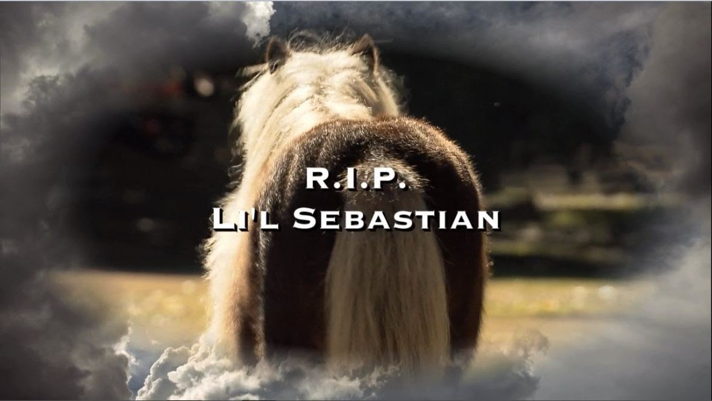
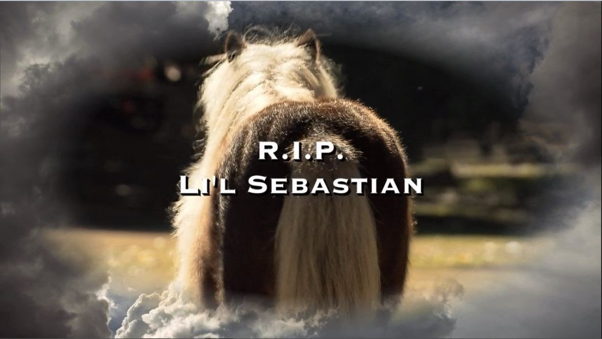

MEET THE CHARACTERS
For those of you who are unfamiliar with the show Parks and Recreation, here is a little bit of background of the characters you'll be getting to know in this Murder Mystery game.
Let's meet the characters!


For those of you who are unfamiliar with the show Parks and Recreation, here is a little bit of background of the characters you'll be getting to know in this Murder Mystery game.
